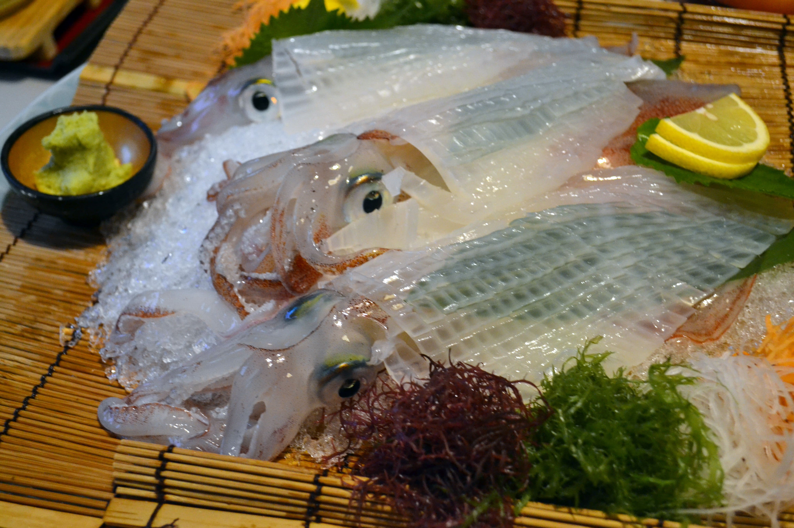

参加者全員が唐津市長。明日の唐津をどう導く？ 茶ッカソンin Karatsu 2017/9/9〜10
〜〜〜〜〜〜〜〜〜〜〜〜〜〜〜〜〜〜〜〜〜〜〜〜〜〜〜〜〜〜〜〜〜〜〜〜〜〜〜〜〜〜〜〜〜〜〜〜〜〜〜〜〜〜〜
３日間にわたり唐津と東京の２都市で開催される「茶ッカソンin Karatsu」。今回は、レポートも趣向を変えて参加者の方に書いていただきました。
〜〜〜〜〜〜〜〜〜〜〜〜〜〜〜〜〜〜〜〜〜〜〜〜〜〜〜〜〜〜〜〜〜〜〜〜〜〜〜〜〜〜〜〜〜〜〜〜〜〜〜〜〜〜〜
《Karatsu１日目》
「お茶」と「坐禅」と「ハッカソン」
「９月に唐津で茶ッカソンが開催されるんですよ！」
今年の春先、Uターンの相談に行った唐津市役所で、初めてその言葉を知りました。
なんとGoogleをはじめとするシリコンバレーのIT企業のオフィスやカファテリアの冷蔵庫に「お〜いお茶」を入れた伊藤園の伝説の営業マン（笑）が企画しているアイデアソンの一種とのこと。
「お茶を飲みながら、世の中をちょっと良くするアイデアについて議論する『現代版茶会』」が、茶ッカソンであり、「茶」と「ハッカソン」を組み合わせたものということでした。
テーマは「唐津市のまちづくりコンセプトを考えよう！」。
2014年に行われた第１回の様子
なにそれ、面白そう！！ 以前からアイデアソンには興味があり、しかも帰郷した後の唐津でまちづくりを主題に開催されるとあれば、参加しない手はありません。唐津で２日間、東京で１日。茶ッカソンとしても初めての、２都市間で３日間にわたる企画です。
交通費は自費ですが、きっとお金には変えられない「なにか」が待っているはず。いったい、どんなことが起こるんだろう。不安とそれ以上の期待を胸に、2017年9月9日（土）10時半、快晴の空の下会場となる旧大島邸に向かいました。
明治時代中期に建てられた旧大島邸。茶ッカソンのロゴ畳が迎えてくれました
坐禅とお茶で心と体をリセット！ 先入観なくひとの話を聴く土台をつくる
受付をすませて中に入ると、さっそく前室で参加者同士の自己紹介が始まっており、女性参加者の姿もチラホラ見られます。
1人でなく良かった！ と胸をなでおろしつつ、まずは茶ッカソンについてや、今回唐津市との共同開催に至った経緯などの説明が、茶ッカソンの立案者である伊藤園の角野さんから行われました。
前室での様子
参加者は総勢で26人。うち東京からわざわざ唐津まで来られた方が８人もおられました。茶ッカソンへの期待度が伺えます。
最初のワークは、坐禅とお茶をいれること。
角野さんの指導のもと、10分間の坐禅をします。その後チーム分け（各チーム５〜６人ほどで５チーム）が主催者より発表され、そのチームごとにお茶をいれることになりました。
私はCチーム。東京から参加のOさん、茨城出身で福岡に赴任中のUさん、唐津市役所のKさん、観光協会のTさん、Uターンほやほやの私という、女性は私１人ですが、なかなか外と内の人間のバランスのとれたチーム構成です。
伊藤園の角野さんよりおいしいお茶のいれ方がレクチャーされ、チーム初の共同作業に。さらに、伊藤園のお茶をさまざまにブレンドしたり、いれ方を工夫して新しいお茶を生み出すという、遊び心あふれるワークもありました。
チームごとにお勧めの飲み方を発表する頃には最初の緊張もほぐれ、すっかりリラックスした雰囲気に。
坐禅で心を整え、お茶をいれ、飲むという行為を通して心身がリセットされ、フラットな状態で本格的なコンセプトワークに入ります。
伊藤園のティーテイスターによるおいしいお茶のいれ方講座
さっそく唐津のコンセプトを考える
地図などをもとに15時半からフィールドワークで行く場所をチームごとにざっと決めた後、30字以内で「◯◯なまち・唐津」「◯◯が××する唐津」などのコンセプトワードを考えるというお題が課せられました。
地元出身者を中心に唐津とはどういう街か、どういう人が住んでいるのか、名物はなにか、大きな模造紙に思いついたワードを書き出した付箋を貼り、チームの考えをまとめていきます。
「唐津」に対する印象などをどんどん書き出します
と、ここでアクシデントで遅れていた、今回のファシリテーターでコアバリューコンサルタントの若宮さんが到着されました。
この時点での各チームのコンセプトはこんな感じ。
Aチーム：お茶とお酒と唐津焼。美食の聖地からつへ
Bチーム：懐かしい景色、見たかった景色に触れて、ゆったり過ごせる街
Cチーム：新しい故郷になってくれる街
Dチーム：「歴史」と「挑戦」というワードが出たところでタイムアップ
Eチーム：福岡から1時間！ 泊まらずにはいられない街・からつ
発表後、若宮さんから「コアバリュー」「ユニークネス」について、スターバックスやディズニーなどの例をひきつつ、説明がありました。他の市と取り替えてもわからないような美辞麗句のコンセプトではなく、世界で１つだけの唐津だけのコアバリュー、ユニークネスを探る今回の旅の着地点が示されました。
若宮さんは言います。「良いコンセプトは良いコアバリューを体現する」と。
そのために必要なことは、次の３つ。
①ユニークである（奇抜ということではなく、そこにしかない「ならでは」のもの）
②浸透する
③やらないことを決める
それらを踏まえ、チームごとに唐津の街へ飛び出しました。
一級建築士で株式会社uni’que（ユニック）CEOでLancersのプロダクトバリューマネージャーで、以前はNTTdocomoやDeNAで新規事業の立ち上げにも携わっていた若宮さん。何者かわかりにくいですが、「ユニーク」な方
街の空気に触れ、とにかく歩く
３時間ほどのフィールドワークで、私たちのチームがまず行ったのは、旧大島邸の目と鼻の先の唐津神社。昨年ユネスコの無形文化遺産に登録された「唐津くんち」はこちらの神社の例大祭です。
他のチームもけっこう来ていました
そこから車で、日本最古の水田跡が確認された菜畑遺跡の資料を展示している末盧館（まつろかん）へ向かい、唐津の歴史の深さに触れました。
高床式倉庫を模した末盧館
古代米の田んぼを見学
車をもとの場所に戻し、そこからあとはひたすら歩きます！ 西の門館あたりの石垣の散歩道を進むと、国の重要文化財に指定されている旧高取邸や、唐津で１、２を争う老舗旅館などの前を通り唐津城へ向かいました。
石垣の散歩道
実は末盧館も初めてなら、唐津城の下に出るこの石垣の散歩道を歩くのも私は初めて。新鮮な驚きをもって歩くことができました。時間がないため、私たちのCチームでは、唐津の概略が知れて街の様子がわかるコースを考えたのですが、外から来られたOさんとUさんは、徹底した車社会で、歩行者や自転車が道にほとんどいない様子に驚かれていました。
唐津城より虹の松原を望む
唐津城からさらに唐津郵便局の方向に抜け、東京駅を設計した辰野金吾監修の旧唐津銀行を見学。からつバーガーのおいしさに驚くOさんとUさんを見てニンマリしたりしつつ、呉服町商店街から夕食場所の玄洋さんへ。
他のチームも、唐津焼の窯元に行ったり、鏡山の展望台から唐津湾を見たりと、さまざまなかたちで唐津というフィールドをインプットしていたようです。

唐津名物呼子のイカの活き造りで疲れた体と頭をリフレッシュ
フィールドワークで見つけた唐津「らしさ」をグルーピング
透き通ったイカの活き造りを堪能したあとは、もう一度旧大島邸に戻り、「唐津らしさ」を表す名詞と形容詞を各チーム１つずつ探っていきます。
自分たちが唐津の街を歩くことで見つけた「唐津のユニークネス」とはなにか？
そこここで撮影した写真をグルーピングしながら、ああでもない、こうでもないと頭を悩ませます。
夜のワークではチームごとの発表はなく、ひとまずチーム内で出てきた「名詞」と「形容詞」を若宮さんに伝え終えたのは、夜９時過ぎ。長い１日目が終了しました。
インプットの多い１日でしたので、なかなか寝付けず、夢の中でも唐津散策をしていたくらいです（笑）。
《Karatsu２日目》
「名詞」「形容詞」をユニークワードへ変換
9月10日、日曜日の朝８時半、唐津での茶ッカソン２日目が始まりました。
まずは呼吸を意識する５分間の坐禅を通して、頭の中をリセットしていきます。
それから、夜中に届いていた若宮さんからのフィードバックをもとに、昨晩自分たちが出した「名詞」と「形容詞」が、本当に唐津ならではのユニークワードになっているのか、似た街との差別化ができるのかを掘り下げていきます。
メンターの角野さんや小笠原さん（伊藤園）、若宮さんらは、各チームの議論を見守りつつ、行き詰まっているチーム（私たちのことですが）にはさまざまな考えるヒントをくださいました。
マインドマップづくりで見えてきた、それぞれの唐津の未来
次のワークでは、チームごとにたどり着いたワードから導かれるマインドマップで「唐津の未来」をつくっていきました。
制限時間は50分！
そうして、マインドマップで見つけた「唐津らしさ」をもとに、CREC（Conclusion：結論、Reason：理由、Example：例、Conclusion：結論）の流れでプレゼン資料もつくらなければなりません。
これも制限時間50分！ 時間との戦いです。
30字以内のコンセプトワード「◯◯◯ からつ」をつくり（Conclusion：結論）、そのワードにつながった素材と見つけた「唐津らしさ」をまとめ（Reason：理由／根拠）、それを活かして、こういうまちにしていく、という未来予想図の具体案（Example：事例）、そしてまた結論（Conclusion）に戻ります。
最終的に、２日間の総仕上げとして各チームの代表者が３分ずつプレゼンを行いました。資料の精度はそれぞれですが、初日からすると、より「唐津」として刺さるワードが増えています。
A：唐津焼のような渋い大人のからつ
B：街を歩くと江戸〜昭和の風景がまだらにあって、予想外の違和感が楽しめる街、唐津
C：生活感と歴史が同居する第二の故郷 からつ
D：初めてに挑戦する街 からつ
E：埋もれた幸運を掘り出す町 からつ
ずいぶん印象が変わりました。チームごとにそれぞれの唐津らしさを掘り下げ、理由づけもかなり明瞭になっています。
こうして唐津での茶ッカソンは終了しましたが、まだまだ課題は多いため、正直もやっとしている部分も多いです。

今週末は、いよいよ東京での、峰達郎唐津市長をはじめとする審査員の方々の前での最終プレゼンです。唐津市の政策ブレーンになるべく、各チームがこの２日間で得た知見を、よりブラッシュアップして臨みます。
皆様、9月16日（土）、渋谷ヒカリエにてお会いしましょう。
（記事作成：Aiko Ikeda）